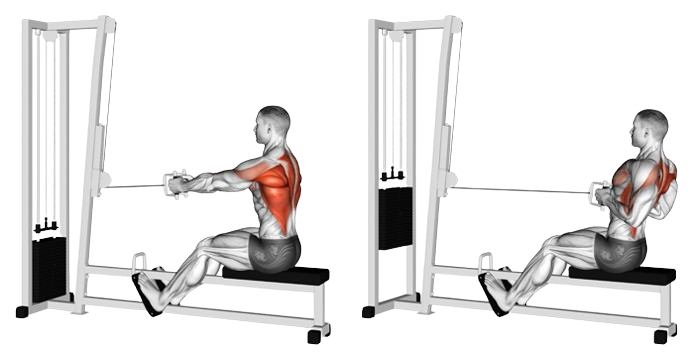

Тяга нижнього блоку

 Сидячи на лаві, упертися ногами в його опори і взятися за ручки
Сидячи на лаві, упертися ногами в його опори і взятися за ручки
Випрямити і напружити спину, корпус злегка відкинути назад
Витягнути руки перед собою, розслабити плечі і біцепси
Акуратно потягнути ручки до живота, не згинаючи руки й зберігаючи положення спини
У крайній точці максимально звести лопатки. Випрямити руки у вихідне положення
 Не округляти спину
Не округляти спину
Не нахилятися вперед
Виконувати всі повторення в одному темпі